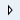

Importing Graphics Files
You can import graphics (.ccg\.cct) from a custom folder or another project into your current project's Graphics folder.
Select the topic related to your task:
Import Graphic Files Using Drag-and-Drop
- If you are copying over a batch of graphics and would like to retain any folder structure they may currently be in, you will have to first re-create the folder structure in the System Browser Graphics tree. You can also use the Consistency Checker for this task.
- The Graphics Editor is open.
- System Manager is in Engineering mode.
- Navigate to the location of the graphics you want to import into your current project.
- Select and drag a graphic you want to copy to the current project, and drop it over the Graphics Editor Ribbon.
- The graphic displays in the Graphics Editor.
- From the File menu, select Save As.
- The Save As dialog box displays.
- Click the

arrows to expand the Project and then Graphics directories, and then click the folder you want to save the graphic to. - In the Name field, type the name of your graphic and click Save.
- The graphic is saved to your current project. Repeat for each graphic as required.
Import Graphic Files Using the Consistency Checker Tool
You can import graphic files from one project into another, or import from a custom folder to your current [Installation Drive]:\[Installation Folder]\[Project Name]\Graphics folder using a system task in the Consistency Checker Diagnostic Tool Tasks.
NOTE: When you run a Consistency Checker task, you must only run one task at a time.
- Copy and then paste all your graphic files from the old project over to the current project where you would like to use the graphics: [Installation Drive]:\[Installation Folder]\[Project Name]\Graphics folder.
- In the Graphics Editor, navigate to the File menu, and click Consistency Checker.
- Select one of the following tasks:
- Import folders and their graphics: Bulk import graphics (.ccg)
NOTE: When using the bulk import graphics task to change the folder structure (e.g. rename a graphics folder) this can have an impact on existing links to affected graphics and on related items. For more information on how Links and Related Items are affected, see Consistency Checker Diagnostic Tool Tasks > Bulk Import Graphic (.ccg). - Graphic and Graphic Template import only: Check *.ccg and *.cct files against System Browser nodes check box, and then click Check.
- The Consistency Checker goes through the project's Graphics folder and compares against the System Browser Graphics tree.
- When the Consistency Checker is finished checking, Completed with Findings
 displays next to the task and in the Findings pane, a list of the graphics found in the Graphics folder but not the System Browser Graphics tree display.
displays next to the task and in the Findings pane, a list of the graphics found in the Graphics folder but not the System Browser Graphics tree display. - In the Findings pane, right-click the Solution column heading, and then select Fix All.
- The Consistency Checker runs to save the Graphic to the System Browser Graphics tree.
 Completed Success displays next to the task and next to each graphic in the Findings section.
Completed Success displays next to the task and next to each graphic in the Findings section.
- Your graphics have now been imported into the project's Graphics folder and display in the System Browser Graphics tree.
Import Raster Image Files
- You are in Design or Test mode and have a graphic open.
- On the Home tab, from the Elements group, click
 .
. - The Open dialog box displays.
- Navigate to and click the image file to insert, and then click Open.
- The dialog box closes and the image displays in the top left corner of the canvas.
- With the image selected on the canvas, navigate to the Properties view, and adjust the Image properties as necessary.

NOTE:
The performance of a graphic may be severely impacted if it contains one or more raster images with active values in the Rotation Speed property of the Layout group property. Raster images supported by the Graphics Editor include: BMP, JPG, GIF, TIF, TIFF, and PNG.
Import XAML, XPS, and DWF Files
- You are in Design or Test mode, a graphic is open on the canvas, and you would like to insert a XAML, XPS, or DWF file into the graphic.
- On the Home tab, from the Elements group, click
 .
. - From the Open dialog box, select the file you want to import.
- Select Open.
- The file is imported to the active graphic and placed in the upper left-hand corner of the canvas.
- Navigate to the Properties view and adjust the property settings as needed.
Related Topics
For related procedures, see Running the Consistency Checker Diagnostic Tool.
For background information, see the following:
- Import Image File Element.
- Import .XML Element.
- Import AutoCAD and XML Element.
- Consistency Checker Diagnostic Tool Tasks